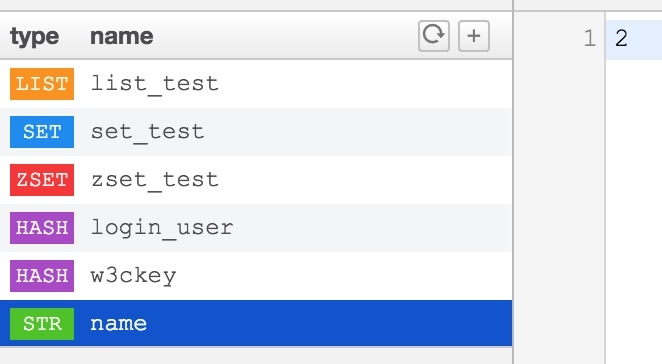
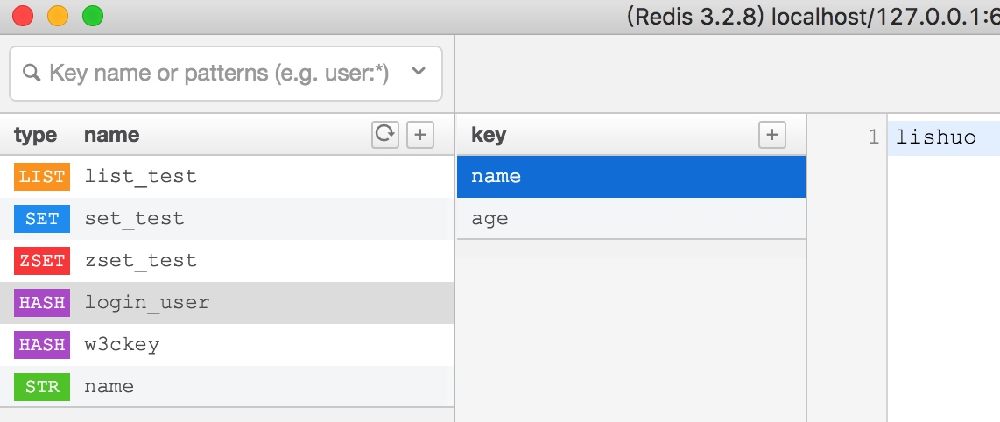
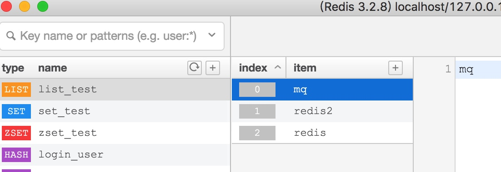
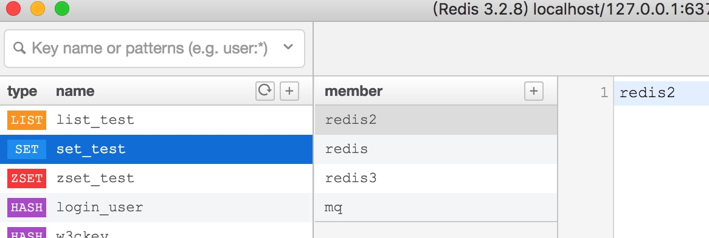
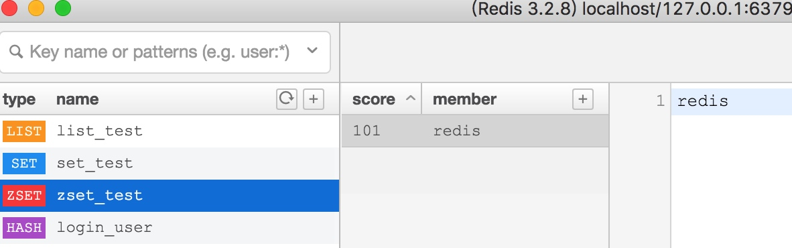
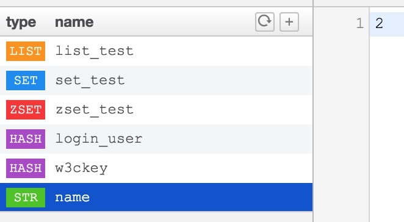
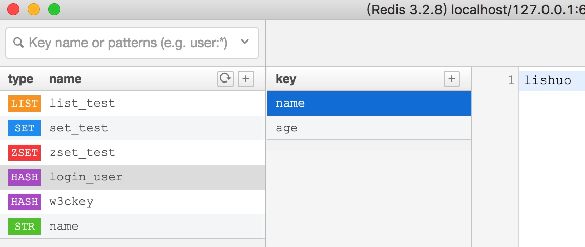
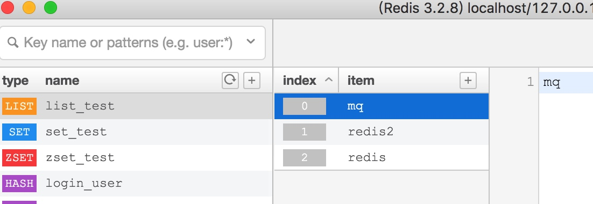
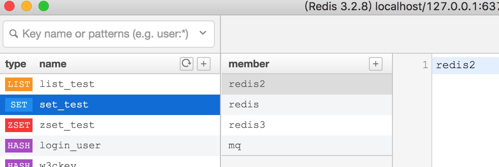
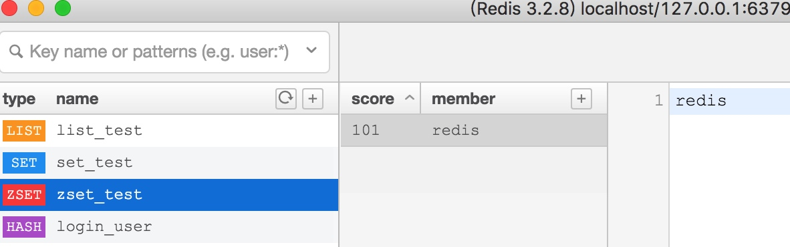

支持类型
认识
redis并不是简单的key-value存储，实际上他是一个数据结构服务器，支持不同类型的值。也就是说，你不必仅仅把字符串当作键所指向的值。下列这些数据类型都可作为值类型：
根据实际存储的样子，来看一下每个数据类型真实存储情况
1. 字符串（strings）

散列（hashes）
列表（lists）
有序
集合（sets）
无序
有序集合（sorted sets）

路漫漫其修远兮吾将上下而求索
redis并不是简单的key-value存储，实际上他是一个数据结构服务器，支持不同类型的值。也就是说，你不必仅仅把字符串当作键所指向的值。下列这些数据类型都可作为值类型：
根据实际存储的样子，来看一下每个数据类型真实存储情况
1. 字符串（strings）

散列（hashes）

列表（lists）
有序

集合（sets）
无序

有序集合（sorted sets）

官网定义
Redis 是一个开源的，内存中的数据结构存储系统，它可以用作数据库、缓存和消息中间件。 它支持多种类型的数据结构，如 字符串（strings）， 散列（hashes）， 列表（lists）， 集合（sets）， 有序集合（sorted sets） 与范围查询， bitmaps， hyperloglogs 和 地理空间（geospatial） 索引半径查询。 Redis 内置了 复制（replication），LUA脚本（Lua scripting）， LRU驱动事件（LRU eviction），事务（transactions） 和不同级别的 磁盘持久化（persistence）， 并通过 Redis哨兵（Sentinel）和自动 分区（Cluster）提供高可用性（high availability）。
composer require predis/predis
参考redis目录
可以在 Redis 门面上调用任何 Redis 命令
use Illuminate\Support\Facades\Redis;
Redis::command('lrange', ['name', 5, 10]);
参数1 接受的命令
参数2 参数数组
指定多个链接
config/database.php 中配置
'redis' => [
'client' => 'predis',
'default' => [
'host' => env('REDIS_HOST', 'localhost'),
'password' => env('REDIS_PASSWORD', null),
'port' => env('REDIS_PORT', 6379),
'database' => 0,
],
'authredis' => [
'host' => env('AUTH_REDIS_HOST', '127.0.0.1'),
'password' => env('AUTH_REDIS_PASSWORD', null),
'port' => env('AUTH_REDIS_PORT', 6379),
'database' => 0,
],
],
等价
app('redis')->connection('default')->set('1',2);
app('redis')->connection('default')->get('1');
app('redis')->connection('指定我们链接那个redis')->操作
一次操作中发送多个命令到服务器
Redis::pipeline(function ($pipe) {
for ($i = 0; $i < 1000; $i++) {
$pipe->set("key:$i", $i);
}
});
Predis
除了默认的 host、port、database 和 password 服务器配置选项，Predis 还支持额外的用于定义每个 Redis 服务器的连接参数，要使用这些额外的配置项，只需在配置文件 config/database.php 中将它们添加到 Redis 服务器配置中：
'default' => [
'host' => env('REDIS_HOST', 'localhost'),
'password' => env('REDIS_PASSWORD', null),
'port' => env('REDIS_PORT', 6379),
'database' => 0,
'read_write_timeout' => 60,
],
文档
http://laravelacademy.org/post/6974.html
列出 laravel 常用的数据结构的运用
laravel支持这种写法
Redis::command('lrange', ['name', 5, 10]);
所以具体应用参考redis文档，下面简单列出几种常用实例
Redis::command('set', ['name','ls']);
Redis::command('get',['name']);
LPUSH 命令可向list的左边（头部）添加一个新元素，而RPUSH命令可向list的右边（尾部）添加一个新元素。最后LRANGE 命令可从list中取出一定范围的元素:
Redis::command('lpush', ['list-ls-name','ls2']);
dd(Redis::command('LRANGE',['list-ls-name',0,-1]));
具体用法参考文档（文档能解决百分之90的使用问题）
'lifetime' => env('SESSION_LIFETIME', 120), 默认时间
'expire_on_close' => true, 关闭浏览器立即到期
redis中其实并没有删除，而是从新生成一条，之前还在（默认120分钟）*这个会不会是个问题
$request->session()->flush(); 其实就是删除value里面的token，不会删除所有的值
session(['a'=>'1']);
session('a');
session()->all();
session(['a' => 'b']);
return session()->all();
应用场景 查找，加密
HashMap 的实例有两个参数影响其性能：初始容量 和加载因子。容量是哈希表中桶的数量，初始容量只是哈希表在创建时的容量。加载因子 是哈希表在其容量自动增加之前可以达到多满的一种尺度。当哈希表中的条目数超出了加载因子与当前容量的乘积时，则要对该哈希表进行 rehash 操作（即重建内部数据结构），从而哈希表将具有大约两倍的桶数。在Java编程语言中，加载因子默认值为0.75，默认哈希表元为101[1] 。